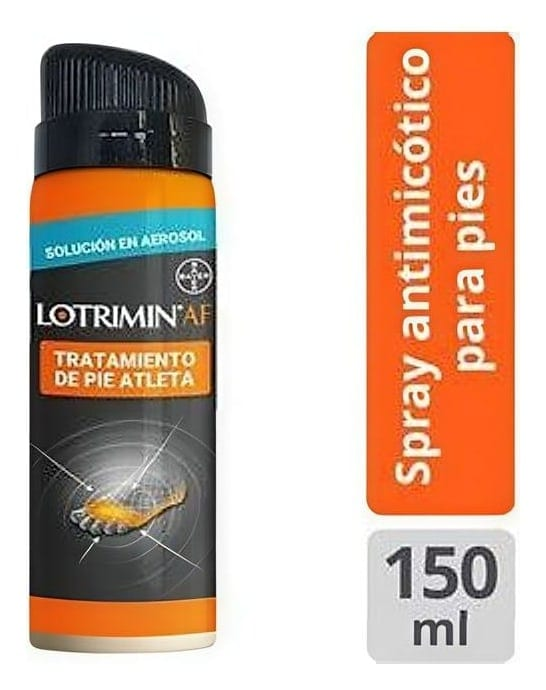

<!DOCTYPE html><html lang="tr"><head><meta charset="utf-8"><meta name="viewport" content="width=device-width,initial-scale=1"><meta name="referrer" content="strict-origin-when-cross-origin"><title>Lotrimin Sprey %2 150 g – Kullanma Talimatı | İlaç Pro</title><meta name="description" content="LOTRIMIN®yüzeyel olarak cilde kullanım için antifungaller (mantar hastalıklarına karı kullanılan) grubuna ait tıbbi…"><link rel="canonical" href="https://mustafayalvac244-tech.github.io/ilacpro-veri/ilac/8699708510571.html"><meta property="og:type" content="article"><meta property="og:locale" content="tr_TR"><meta property="og:title" content="Lotrimin Sprey %2 150 g – Kullanma Talimatı"><meta property="og:description" content="LOTRIMIN®yüzeyel olarak cilde kullanım için antifungaller (mantar hastalıklarına karı kullanılan) grubuna ait tıbbi…"><meta property="og:image" content="https://mustafayalvac244-tech.github.io/ilacpro-veri/gorsel/8699708510571.jpg"><meta property="og:image:width" content="546"><meta property="og:image:height" content="690"><meta property="og:image:type" content="image/jpeg"><meta property="og:url" content="https://mustafayalvac244-tech.github.io/ilacpro-veri/ilac/8699708510571.html"><link rel="stylesheet" href="_sayfa.css"></head><body data-id="24bc6f0b7051"><main><header>İlaç Pro · Kullanma Talimatı (TİTCK)</header><h1>Lotrimin Sprey %2 150 g</h1><figure></figure><section id="nedir"><div class="bas"><h2>Ne için kullanılır</h2><small>KT · Bölüm 1</small></div><p>LOTRIMIN®yüzeyel olarak cilde kullanım için antifungaller (mantar hastalıklarına karı kullanılan) grubuna ait tıbbi bir üründür.</p><p>LOTRIMIN®, mikonazol nitrat etken maddesini içermektedir.</p><p>Her kutuda bir adet 150 gr’lık metal ie bulunan formda kullanıma sunulmaktadır.</p><p>LOTRIMIN®ayaklarda, gövdede, kasıklarda, kol ve bacaklarda görülen deri hastalığına neden olan mantarların ve maya mantarlarının neden olduğu yüzeyel mantar enfeksiyonlarında ve gram pozitif bakteriler ile mantar enfeksiyonunun birlikte bulunduğu karıık enfeksiyonların tedavisinde kullanılır.</p></section><div id="kt"></div></main><footer><p>Kaynak: <a id="pdf" href="https://titck.gov.tr/storage/kubKtAttachments/8375df4964599.pdf" rel="noopener">TİTCK Kullanma Talimatı</a> · onay 21.12.2011</p><p>Bu sayfa yorum içermez; metin Kullanma Talimatı'ndan olduğu gibi alınmıştır.</p><p>İlaç Pro tıbbi tavsiye vermez, tanı koymaz, doz önermez ve bir tıbbi cihaz değildir. Kullanma Talimatı metinleri TİTCK'dan olduğu gibi aktarılır. İlaç kullanımıyla ilgili kararlar için doktorunuza veya eczacınıza danışın.</p></footer><nav><a class="btn b1" id="ac" href="ilacpro://ilac/8699708510571">Uygulamada aç</a><a class="btn b2" id="indir" href="../indir/">İlaç Pro'yu indir</a></nav><script src="_sayfa.js" defer></script></body></html>